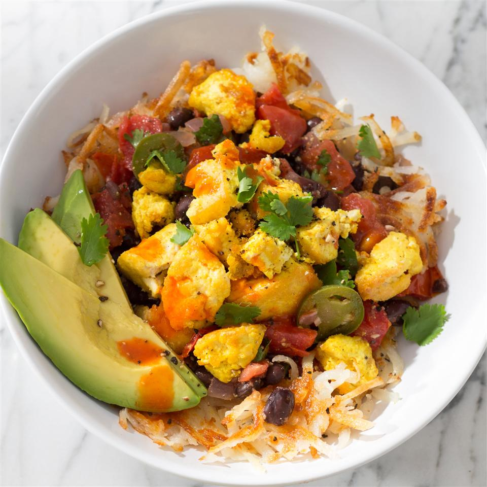

Ultimate Breakfast Tofu Bowl

Ultimate Tofu Breakfast Bowl
Ingredients needed
- 3 tablespoons olive oil
- 1 (14 oz.) package extra-firm tofu, drained
- Salt and pepper (to taste)
- 1.5 tsp each of onion powder,cumin, and garlic powder
- 0.5 tsp ground turmeric
- 1 tablespoon each of lemon juice and olive oil
- 1 cup finely diced red onion
- 2 jalapeno peppers, seeded and chopped
- 3 cloves garlic, minced
- 2 cups chopped tomatoes
- 0.25 cup chopped cilantro
- 1 (15.5 oz.) can no-salt-added black beans, drained and rinsed
- 1.5 cups cooked hash brown potatoes
- 1 avocado, peeled, pitted, and sliced
- 1 tsp hot sauce
Cooking instructions
- Preheat a large skillet over med high heat. Add 2 tbsp oil. Break
tofu apart, sprinkle with salt and pepper, then cook until liquid
cooks out and tofu browns (10 mins).
- Add onion/garlic powders, turmeric, lemon jjuice, and 1tbsp oil, and
toss to coat. Cook 5 mins more.
- Preheat a heavy bottomed saucepan over med high heat. Add 1tbsp oil.
Cook onion and jalapenos with a pinch of salt, stirring until
translucent (5 mins.) Add garlic and cook until fragrant (30 sec.)
Add tomatoes, cumin, and a pinch of salt, cook while stirring until
tomatoes become saucy (5 mins.) Add cilantro and lemon juice, let
cilantro wilt then add beans and heat through, stirring occasionally
(2 mins.)
- Spoon hash browns into each bowl, followed by a scoop of beans, and a
scoop of scramble. Top with avocado, lemon jjuice, and cilantro.
Serve with hot sauce.